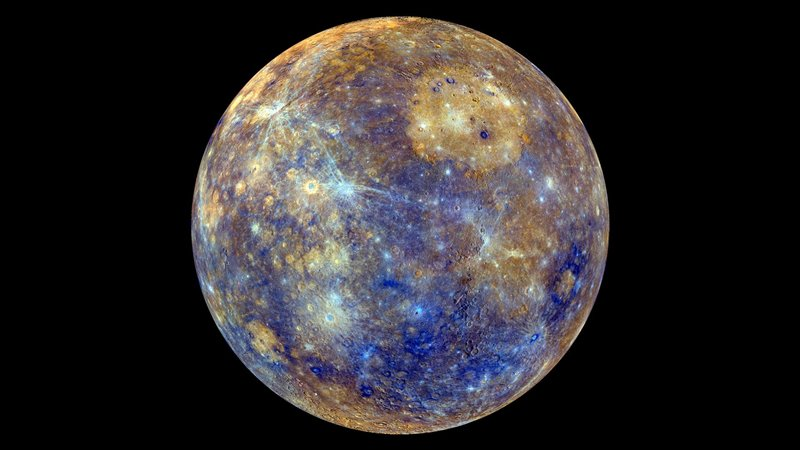
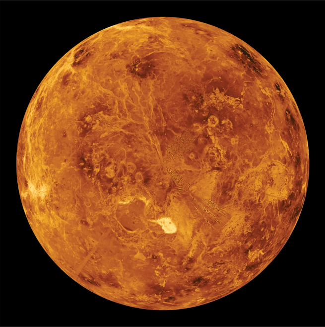
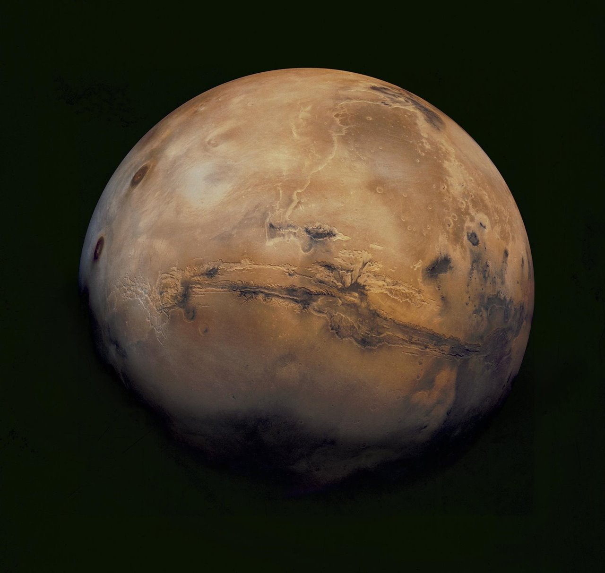
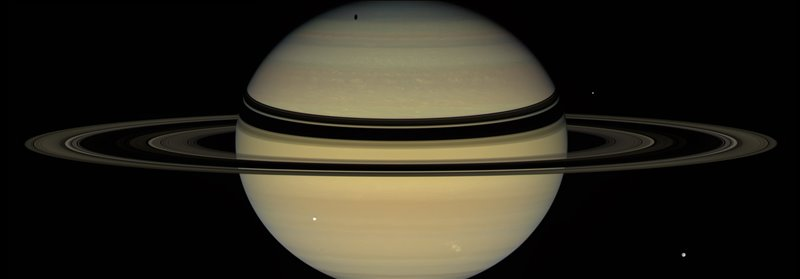
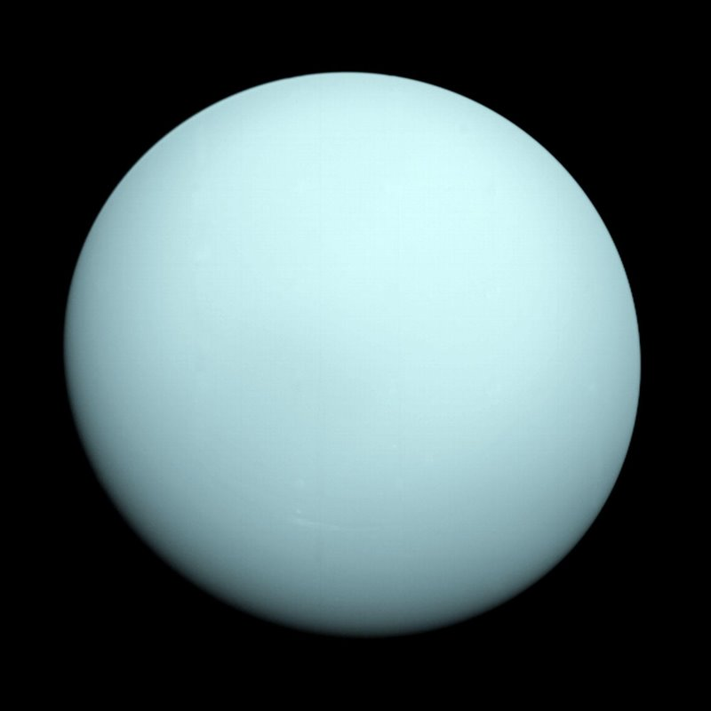
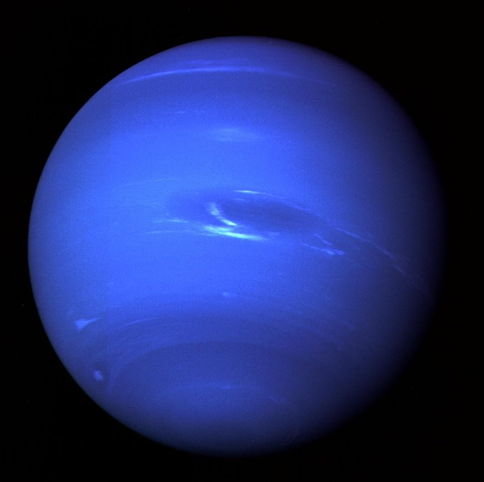

Galería de Planetas

Mercurio

Venus

Tierra

Marte

Mercurio

Venus

Tierra

El sistema solar es un sistema planetario constituido por una estrella que ejerce atracción gravitacional sobre los cuerpos celestes que giran a su alrededor. Según la NASA, se cree que nuestro sistema solar se formó a partir de una sola nube plana de gas. Otra teoría, indica que se formó cuando un objeto de gran tamaño pasó cerca del Sol, y empujó una corriente de gas lejos de él. Esta última explicación sugiere que los planetas surgieron de esta corriente gaseosa.
Independientemente de cómo fue su origen, la agencia espacial estadounidense estima que este complejo sistema existe desde hace más de 4 mil millones de años.
Principalmente, está compuesto por el Sol y los elementos que lo orbitan. Ubicado en un brazo exterior de la Vía Láctea, alberga mucho más que a la Tierra y que a otros planetas conocidos. El Sol, la estrella principal de este entramado espacial, está en el centro de la organización de los elementos, tiene forma elíptica (ovalada), y es el objeto espacial más grande del sistema: representa 99% de la masa total.
Es el planeta más cercano al Sol y también el más pequeño del sistema solar. Su superficie es rocosa y tiene temperaturas extremas.
Es conocido como el planeta más caliente por su densa atmósfera. Su tamaño es muy parecido al de la Tierra.
Es el único planeta conocido con vida. Posee agua líquida, atmósfera y una superficie ideal para los seres vivos.
Llamado el planeta rojo, Marte posee montañas gigantes y señales de que pudo haber tenido agua.
Es el planeta más grande del sistema solar. Es un gigante gaseoso famoso por la Gran Mancha Roja.
Destaca por sus impresionantes anillos. Es un gigante gaseoso compuesto principalmente por hidrógeno y helio.
Es un gigante helado que gira inclinado sobre su lado, algo único entre los planetas.
Es el planeta más lejano del Sol y posee algunos de los vientos más fuertes del sistema solar.






Su densidad es tan baja que, teóricamente, podria flotar.
Un dia en venus dura 116 días y 18 horas terrestres.
Olympus Mons es el volcán más grande conocido.
Más de 1.300 Tierras podrían caber dentro de este gigante.